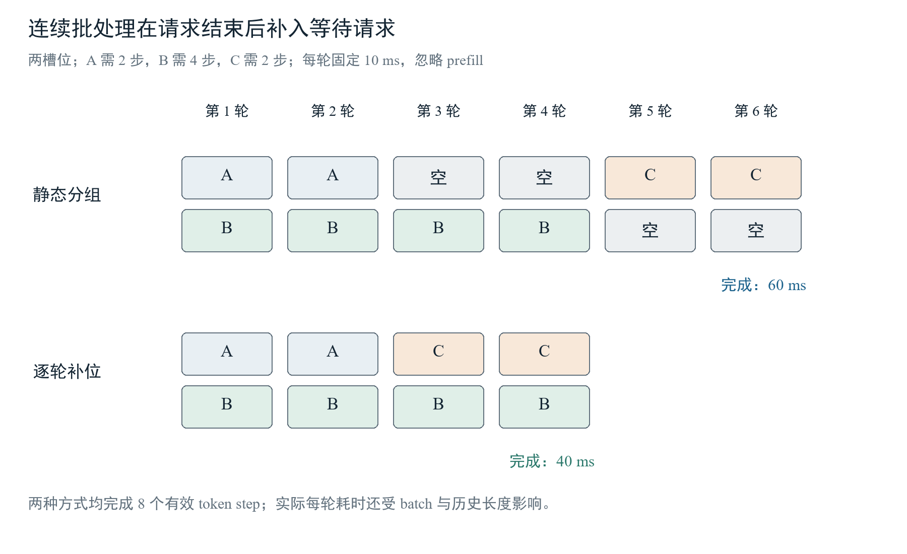

代码块旁的行号链接指向本课采用的提交，仓库及许可见课末。
1 请求生命周期与计时边界
用户输入一段文本后，服务需要解析请求、构造chat template、分词、准入与排队，再把token交给引擎。prefill处理尚未计算的输入位置，生成首个输出token；随后各轮decode处理已有输出并继续采样，直到停止条件满足。协议处理、模型执行和流式发送可以交叠，因此总耗时通常不能用几个随手采样的CPU函数时间相加得到。
设客户端在0秒发起请求，0.10秒引擎接纳，0.30秒首次调度，0.80秒生成首token，0.86秒客户端收到首个有效输出；第二个输出在0.90秒到达，第三个在0.98秒到达，结束标记在1.02秒到达。客户端首输出延迟为0.86秒，两个消息间隔为40与80毫秒，最后输出延迟0.98秒，完整协议关闭延迟1.02秒。每个数字都有对应事件，不能统称“推理时间”。
TTFT（Time To First Token）必须说明起点在哪里、首个什么事件算输出。引擎内部可以从收到token IDs或加入队列开始；客户端通常从发送HTTP请求开始。TTFT包含的分词、网络与排队范围不同，两套数值可以同时正确。单调时钟适合计算同一时钟域内的间隔，不能直接拿不同机器的perf_counter相减。
代码 1 vLLM的prefill和decode指标包含相应区间内的抢占等待
# Queued interval is from first QUEUED event to first SCHEDULED
queued_time = req_stats.scheduled_ts - req_stats.queued_ts
# Prefill interval is from first SCHEDULED to first NEW_TOKEN
# Any preemptions during prefill is included in the interval
prefill_time = req_stats.first_token_ts - req_stats.scheduled_ts
# Decode interval is from first NEW_TOKEN to last NEW_TOKEN
# Any preemptions during decode are included
decode_time = req_stats.last_token_ts - req_stats.first_token_ts
# Inference interval is from first SCHEDULED to last NEW_TOKEN
# Any preemptions during prefill or decode are included
inference_time = req_stats.last_token_ts - req_stats.scheduled_tsqueued_time 覆盖首次 QUEUED 到首次 SCHEDULED，prefill_time 从首次调度延伸到首个 NEW_TOKEN，decode_time 从首个 NEW_TOKEN 延伸到末个 NEW_TOKEN。这些是框架事件之间的墙钟时间，区间内可能发生抢占。要计算设备上的 kernel 耗时，还需对齐 GPU 时间线。
服务变慢时先确定是哪条时间线变长。客户端TTFT增加而引擎排队与prefill稳定，可以继续检查入口、分词和流式发送；引擎prefill_time增加，也可能来自调度等待或重算。只有进一步分解到具体执行事件，才适合判断某个attention kernel是否退化。

同一教学请求有客户端、引擎和协议结束三种边界。图中时间点为示例，不代表测量结果。
↑ 返回知识点目录2 流式接口的 TTFT、ITL 与 TPOT
每个输出token单独发送时，ITL是相邻token到达时间之差；如果代理缓冲、推测解码或stream配置把多个token合成一条消息，客户端能直接测到的是消息间隔。vLLM benchmark读取有效stream chunk时记录时间，后续使用实际输出token总数计算平均TPOT，两者的样本单位因此可能不同。
代码 2 客户端在有效流式输出到达时记录TTFT与间隔
elif (
choices := data.get("choices")
) and _choice_has_streamed_output(choices[0]):
content = choices[0]["delta"].get("content")
# First token
if not first_chunk_received:
first_chunk_received = True
output.ttft = timestamp - st
# Decoding phase
else:
output.itl.append(timestamp - most_recent_timestamp)
generated_text += content or ""
# Only token chunks advance the request end;
# the trailing usage chunk carries no token.
most_recent_timestamp = timestampfirst_chunk_received只决定首个有效输出事件；之后每次有效chunk追加一个间隔。most_recent_timestamp仅由输出chunk推进，后面的usage统计消息不会人为延长末token时间。一个chunk包含多少token，需要额外从usage或tokenizer获取。
当前_choice_has_streamed_output还认可reasoning、reasoning_content、tool_calls和function_call等输出；包含content但没有role的空字符串也可能对应一个有效token。因此“首个可见正文字符”可能晚于benchmark的首个输出。带思考和工具调用的业务需要在指标名称中保留这种差异。
代码 3 平均TPOT使用输出token数，ITL另行收集chunk间隔
tpot = 0.0
if output_len > 1:
latency_minus_ttft = outputs[i].latency - outputs[i].ttft
tpot = latency_minus_ttft / (output_len - 1)
tpots.append(tpot)
# Note: if output_len <= 1, we regard tpot as 0 for goodput
all_tpots.append(tpot)
itls += outputs[i].itl
ttfts.append(outputs[i].ttft)
e2els.append(outputs[i].latency)仅output_len>1时将TPOT加入tpots；对goodput使用的all_tpots，单token输出按0处理。这个约定避免除零，却不表示单token请求没有计算成本。ITL列表来自stream消息，不能用它的长度直接代替output_len−1。
设四个token被分成三条消息：首条含1个token，0.50秒到达；第二条含2个，0.70秒到达；第三条含1个，0.80秒到达。观测到的消息间隔为0.20和0.10秒，平均150毫秒；按4个输出token计算TPOT为(0.80−0.50)/3=100毫秒。我们无法从这些消息时间反推出第二条消息内两个token各自生成的时刻。
vLLM引擎内部的NEW_TOKEN事件也可能一次携带多个token。stats.py按事件时间更新last_token_ts，同时按new_token_ids长度累计token数。分析speculative decode时，事件间隔、token归一化耗时和客户端chunk间隔都要分别看。
↑ 返回知识点目录3 分位数、均值与 SLO
每请求TPOT先对该请求的输出间隔求平均，再统计跨请求分位数；全局ITL则汇总所有间隔后统计，长输出请求贡献更多样本。假设请求A只有1个后续间隔100毫秒，请求B有9个间隔各10毫秒。两个请求TPOT的平均为55毫秒，而全部10个间隔的平均为19毫秒；它们回答不同问题。
TPOT均值还会掩盖单次停顿。一个请求的100个间隔中99个为10毫秒、1个为1秒，平均TPOT为19.9毫秒，最大间隔却达到1秒。若产品要求持续流畅输出，就需要ITL尾部或每请求最大停顿指标；仅满足平均TPOT阈值无法保证没有明显卡顿。
P99是给定样本集合上的99分位，计算方法和样本规模会影响值。100个请求时尾部只有极少样本，重复运行的波动可能很大。不能把各worker的P99直接平均作为全局P99，也不能将排队P99、prefill P99和网络P99相加当成E2E P99，因为高值未必发生在同一请求。应合并原始样本或可合并的分布统计。
SLO还需明确单请求规则：TTFT≤500毫秒且TPOT≤30毫秒，或要求所有ITL都≤某阈值；不同规则的达标比例会不同。超时、取消、服务错误与无输出都应进入总请求统计，不能只展示成功样本的延迟，让失败请求从评估中消失。
↑ 返回知识点目录4 Prefill 与 decode 的权重复用
对线性层W:[D,N]，本轮T个query token形成X:[T,D]，输出[T,N]，主乘加约2TDN FLOPs。若W能在这一轮从HBM读取一次，权重字节为DNp，则仅按权重项计算的算术强度为2T/p。prefill往往同时提供很多行；单请求常规decode只有一行，把多个请求放到同一轮可以增加T。
以7B dense参数、BF16权重为教学模型，权重共14 GB（十进制）。假设有效带宽2 TB/s且每轮完整读取一次，权重读取下界为7毫秒。单请求每轮产1个token，对应约143 token/s上界；batch=16时若仍读一份权重、其他成本不变，则一轮产16个token，对应约2286 token/s。每个请求的轮间延迟并没有因此缩短16倍。
再假设计算吞吐可达100 TFLOP/s，线性部分每token约14 GFLOPs，则batch为B时计算时间下界为0.14B毫秒。它与7毫秒权重下界在B=50附近相交，说明继续增大batch可能使计算项成为约束。这是忽略KV、通信、激活、低效shape和启动开销的教学交点；真实曲线需要测量，无法用峰值算式替代。
M应包含实际读取的权重、KV与临时量，C与W也应使用对应精度和shape下的可达能力。decode可能受CPU调度或kernel启动限制，大batch decode可能接近计算受限；长prefill也可能受KV、特殊算子或跨卡通信限制。prefill/decode描述输入形状，瓶颈由完整路径决定。
MoE不能把所有专家总参数都算作每token必读，也不能把单token激活参数乘batch后当成无复用流量。batch中路由到的专家集合、专家权重缓存和每专家有效行数共同决定实际读取与GEMM效率，前面MoE课程的路由分布需要带入这里。
↑ 返回知识点目录5 前缀命中后的注意力计算
设已经缓存P个前缀token，本次新增Q个token。因果attention中第i个新增query（i从1开始）可读取P+i个key，所以有效query-key配对数为QP+Q(Q+1)/2。每对执行一次长度d的QK点积及一次value加权，按乘加计2 FLOPs，总核心约4Hd乘配对数。GQA的H仍是query head数，KV head共享主要改变存储和读取复用。
取P=4096、Q=256，有1081472个有效配对。若只算一个孤立256-token序列，则为32896个；相差约32.88倍。前缀命中省去了旧token的投影、MLP和旧query attention，但新增query仍读取前缀KV。对于长前缀短后缀，这部分访问可以成为主要成本。
分成多个prefill chunk不会减少这些因果配对的总数：每个chunk读取此前所有可见历史。它改变单轮工作量与调度机会，也可能增加权重重读和元数据准备次数。小chunk能限制一次占用时间，但吞吐损失与质量不相关；保持位置、mask与KV追加正确时，数学函数保持相同，浮点归约仍可能产生小差异。
代码 4 完整前缀命中仍可能重算末尾，以获得logits
# NOTE: When all tokens hit the cache, we must recompute the last token
# to obtain logits. Thus, set max_cache_hit_length to prompt_length - 1.
# This can trigger recomputation of an entire block, rather than just
# the single last token, because allocate_slots() requires
# num_computed_tokens to be block-size aligned. Removing this limitation
# could slightly improve performance in the future.
max_cache_hit_length = request.get_max_cache_hit_length(max_cache_hit_length)
computed_blocks, num_new_computed_tokens, num_uncached = (
self.coordinator.find_longest_cache_hit(
request.block_hashes, max_cache_hit_length
)
)这个版本把命中长度限制到prompt_length−1，并要求缓存命中块完整。若提示长度恰为块大小的倍数，可能重算末尾整块。不能根据“100%重复输入”推断本次完全没有prefill计算。
例如page=16，重复提示长度32时，最大命中长度31，完整块命中只能为16，余下16个token重算；长度33时，前32个可命中，剩1个重算。具体请求模式还可能主动禁用缓存读取，例如需要prompt logprobs。缓存性能应同时记录复用token数和真正执行token数。
情境 全局因果 attention 已命中 4096 个前缀位置，又追加 256 个位置，允许看自己。
问题 新 query 与前缀、与新段分别形成多少对？总数多少？
答案
结论 1048576+32896=1081472 对。
推导 每个新 query 都能看前缀，共 256×4096=1048576 对。新段内可看自己和更早位置，还有 256×257/2=32896 对。合计 1081472 对。仅计算后一个三角形会漏掉 1048576 对历史读取；实际访存字节还取决于分块复用。
回看题干 ↑6 Decode 的 KV 读写
通常prefill最后一个输入位置的hidden产生首个输出token。该输出token尚未作为下一轮输入经过所有层；下一轮decode才为它生成K/V并写入缓存，再预测后一个token。因此请求里“已有token IDs数量”与“已经完成模型计算的token数量”存在时间差，这也是调度器需要num_computed_tokens的原因。
普通GQA的KV容量为2L×ΣSi×Hkv×d×p。L=32、Hkv=8、d=128、BF16时，每token跨层为128 KiB；单请求8192位置为1 GiB。16个同长度请求占16 GiB，每次全部推进一个token还增加2 MiB。长期常驻的容量、每轮新增写入与每轮历史读取需要分别核算。
dense decode理想情况下沿每个请求的全部历史归约。在上述16路8K例子中，如果每个KV元素每轮读取一次，历史主流量约16 GiB；取有效2 TB/s，下界约8.59毫秒，已超过前节7毫秒权重下界。二者若竞争同一HBM带宽，合计字节下界约15.59毫秒，不能把两个独立时间下界简单取最大当作总带宽成本。实际缓存、融合和KV head复用会改变流量。
在保留全部历史的稠密自注意力中，每追加一个 token 都会增大有效 KV；分页分配的实际占用按页增长。滑动窗口可以限制保留长度，稀疏选择改变读取范围，MLA 与量化改变每条记录的大小，递归状态还会改变容量的增长形式。估算 decode 时间时，先确定该层使用的状态模型和实际读入的字节数。
↑ 返回知识点目录7 KV 页表与物理页
为每个请求预留最大上下文会浪费大量空间；要求每次增长都扩展一段连续内存，也可能触发搬运。分页将KV切成固定token数的页，每个请求保存逻辑页到物理页的映射。相邻逻辑页可以位于不同物理地址，attention通过页表访问它们。分页首先解决空间管理与共享，dense attention仍需读取全部有效历史。
FlashInfer使用类似CSR的三组数组描述一批请求：indptr长度B+1，给出每个请求在indices中的页列表区间；indices保存物理页号；last_page_len长度B，记录每个请求最后一页的有效token数。它们只描述寻址与长度，KV数值保存在独立张量中。非空请求的末页有效长度取1至page_size，整页满时使用page_size。
page_size=4的两请求例子
| 请求 | 页表范围与物理页 | 有效长度 |
|---|---|---|
| A | indptr[0:2]=[0,2] → indices[0:2]=[5,1] | 末页3个，总长度7 |
| B | indptr[1:3]=[2,3] → indices[2:3]=[9] | 末页2个，总长度2 |
| 批次数组 | indptr=[0,2,3]；indices=[5,1,9] | last_page_len=[3,2] |
A的逻辑位置5位于逻辑页1、页内偏移1。页表槽位为indptr[A]+1=1，indices[1]=1，因此读取物理页1的第1个位置。B的逻辑位置1位于物理页9的第1个位置。若错误地把逻辑页号直接当物理页号，请求长度与张量维度仍然合法，读出的内容却属于其他位置。
代码 5 设备端先查物理页，再用stride计算元素地址
__host__ __device__ __forceinline__ size_t get_elem_offset_in_page(size_t head_idx,
size_t entry_idx,
size_t feat_idx) const {
return head_idx * stride_h + entry_idx * stride_n + feat_idx;
}
__device__ __forceinline__ DType* get_k_ptr(IdType page_iter, uint32_t head_idx,
uint32_t entry_idx, uint32_t feat_idx) const {
return k_data + get_elem_offset(__ldg(indices + page_iter), head_idx, entry_idx, feat_idx);
}page_iter是页列表中的槽位，__ldg(indices+page_iter)取得物理页号；get_elem_offset再叠加页、head、页内token和feature偏移。页表仅保存映射，KV数值在另一份存储中。
代码 6 完整页数与末页有效长度还原逻辑序列长度
seq_lens: torch.Tensor
The sequence lengths of each request in the paged kv-cache, shape: ``[batch_size]``.
"""
return (
torch.clamp(kv_indptr[1:] - kv_indptr[:-1] - 1, min=0) * page_size
+ kv_last_page_len
)对非空请求，长度=(页数−1)×page_size+last_page_len。clamp处理零完整页边界，但空请求还需调用方提供一致的末页长度，不能用负页数表达。

同一批请求的逻辑页指向不连续物理页。浅灰槽为空闲尾部，不参与attention。
↑ 返回知识点目录8 页大小、追加写入与执行计划
page_size=16时，31和33个token分别需要2页与3页，共80个槽，64个有效、16个尾页空槽。较大页通常减少页表项，却增加尾部浪费；较小页减少尾部浪费，却增加元数据和寻址工作，并可能不符合某些kernel支持的layout。页大小需要与kernel和缓存共享粒度一起选择。
只有完整内容身份相同的前缀页才适合共享，引用计数决定何时可释放。若共享尾页还允许继续追加，两条分支写入不同token时需要分离存储或写时复制。容量计算既要数逻辑引用，也要数唯一物理页，不能把共享引用重复计入分配字节。
代码 7 追加位置由更新后的序列长度确定，再写入对应页
uint32_t seq_len =
(paged_kv.indptr[batch_idx + 1] - paged_kv.indptr[batch_idx] - 1) * paged_kv.page_size +
paged_kv.last_page_len[batch_idx];
uint32_t page_iter = paged_kv.indptr[batch_idx] + (seq_len - 1) / paged_kv.page_size;
uint32_t entry_idx = (seq_len - 1) % paged_kv.page_size;
DType* k_ptr = paged_kv.get_k_ptr(page_iter, head_idx, entry_idx, tx * vec_size);
DType* v_ptr = paged_kv.get_v_ptr(page_iter, head_idx, entry_idx, tx * vec_size);
vec_t<DType, vec_size>::memcpy(
k_ptr, key + (batch_idx * num_heads + head_idx) * head_dim + tx * vec_size);
vec_t<DType, vec_size>::memcpy(
v_ptr, value + (batch_idx * num_heads + head_idx) * head_dim + tx * vec_size);seq_len表示包含本次追加token的长度，所以使用seq_len−1确定零起始位置。到达新页边界前，调用方必须已经分配物理页并更新页表与末页长度；kernel本身不替调度器申请存储。
例如A从7增长到8，只需把物理页1的最后一个槽写满，last_page_len从3变4；从8增长到9时需要新页，页表追加该物理页号，末页长度重置为1。逻辑位置8不能写到旧末页之后未经分配的地址。
代码 8 官方示例先plan，再在多层run时复用元数据
>>> # create auxiliary data structures for batch decode attention
>>> decode_wrapper.plan(
... kv_page_indptr,
... kv_page_indices,
... kv_last_page_len,
... num_qo_heads,
... num_kv_heads,
... head_dim,
... page_size,
... pos_encoding_mode="NONE",
... data_type=torch.float16
... )
>>> outputs = []
>>> for i in range(num_layers):
... q = torch.randn(batch_size, num_qo_heads, head_dim).half().to("cuda:0")
... kv_cache = kv_cache_at_layer[i]
... # compute batch decode attention, reuse auxiliary data structures for all layers
... o = decode_wrapper.run(q, kv_cache)
... outputs.append(o)plan接收页表、长度、head数量和page_size，准备执行所需辅助结构；每层run传入当前层的query与KV。示例代码来自源码docstring，保留>>>与...提示符，讲义没有执行它。
跨层复用要求这些层使用相容的页布局和问题规格。请求加入退出、长度增长、页数变化或backend条件改变时，需要按接口重新准备或更新相应计划，不能永远沿用最初状态。
NHD表示页内token维在head之前，单份K通常为[num_pages,page_size,Hkv,d]；HND则为[num_pages,Hkv,page_size,d]。dtype与scale、stride、head分组和页大小都影响backend选择。同一层的逻辑KV可以有不同物理layout；将张量view成另一个shape并不会自动完成正确的数据转置。
情境 A、B 的页表 indptr=[0,2,3]、indices=[5,1,9]、末页长度 [3,2]。每页 4 槽，位置从零开始。
问题 求 A 位置 6 的物理页和偏移；A 从 7 增至 9 个 token 后需增几页，第 9 个在哪？
答案
结论 位置 6 在页 1 偏移 2。增 1 页，第 9 个 token 在新页偏移 0。
推导 A 取 indices[0:2]=[5,1]。位置从 0 起，6 div 4=1、余 2，所以落在物理页 1 的偏移 2。位置 7 用完旧页最后一格；位置 8 需新页且偏移 0，新增一页。新物理页编号取决于分配器，题中无法唯一指定。
回看题干 ↑9 连续批处理的逐轮调度
静态batch把一组请求一起运行到整组完成，短请求提前结束后，空位可能无法立即补入新请求。iteration-level scheduling在每轮模型执行后检查完成、接纳和资源情况，让后续轮次的请求集合变化。Orca将调度粒度推进到迭代，并通过selective batching处理不同算子的批处理需求；现代引擎在此基础上加入分页与混合prefill。
教学例子：两槽位，A还需2步，B还需4步，C等待且需2步，暂忽略prefill并假设每轮10毫秒。静态分组先运行A/B四轮，再运行C两轮，共60毫秒；逐轮补位让C在第3轮加入，与B一起在第4轮完成，共40毫秒。两者生成的有效token均为8个；实际轮耗时会随batch和历史长度变化，不能直接把这个比例当真实提速。
代码 9 vLLM用已计算token数与目标token数描述每轮进度
# NOTE(woosuk) on the scheduling algorithm:
# There's no "decoding phase" nor "prefill phase" in the scheduler.
# Each request just has the num_computed_tokens and
# num_tokens_with_spec. num_tokens_with_spec =
# len(prompt_token_ids) + len(output_token_ids) + len(spec_token_ids).
# At each step, the scheduler tries to assign tokens to the requests
# so that each request's num_computed_tokens can catch up its
# num_tokens_with_spec. This is general enough to cover
# chunked prefills, prefix caching, speculative decoding,
# and the "jump decoding" optimization in the future.
scheduled_new_reqs: list[Request] = []
scheduled_running_reqs: list[Request] = []
preempted_reqs: list[Request] = []目标包含prompt、已经产生的output和spec token；num_computed_tokens表示已完成前向的范围。这个表示统一了prefill chunk、缓存前缀与多token验证，调度器无需仅靠一个prefill/decode标签决定工作量。
请求并发数、运行请求数、单轮query token数和GPU microbatch大小是不同量。100个连接可以对应20个运行请求、其余等待；一轮也可能包含16个decode query和240个prefill query。只报告batch_size=256无法说明实际请求集合和历史访问成本。

两槽位、固定10毫秒轮耗时的教学调度。C在A结束后立即进入，减少空槽；不包含prefill成本。
↑ 返回知识点目录10 分块 prefill 对 decode 时延的影响
一段长prefill若独占很长一轮，已有decode请求必须等待这一轮结束才能继续输出。chunked prefill把输入分段，允许每轮保留decode请求并混入有限prefill工作。Sarathi-Serve围绕这种混合构造较均匀的迭代，改善吞吐与尾延迟之间的取舍。它没有消除prefill的计算量，只改变工作分配到各轮的方式。
Sarathi-Serve：chunked prefill与stall-free调度
代码 10 候选token数先受长prefill阈值、总预算和模型长度限制
num_new_tokens = (
request.num_tokens_with_spec
+ request.num_output_placeholders
- request.num_computed_tokens
)
if 0 < long_prefill_token_threshold < num_new_tokens:
num_new_tokens = long_prefill_token_threshold
num_new_tokens = min(
num_new_tokens, token_budget, input_budget - draft_slots
)
# Make sure the input position does not exceed the max model len.
# This is necessary when using spec decoding.
num_new_tokens = min(
num_new_tokens,
self.max_model_len
- request.num_computed_tokens
- self.num_sampled_tokens_per_step,
)num_tokens_with_spec加上output placeholders后减num_computed_tokens得到待处理数量；long_prefill_token_threshold可以限制单请求本轮长度，token_budget与input_budget再限制总量。draft_slots和sampled tokens还占用相应边界，不能只按prompt长度分配。
取教学预算256个query token，已有16路普通decode各需1个query，剩余240可给一个长prefill。4096-token输入至少需要ceil(4096/240)=18轮才能完成，前17轮各240，最后16。若这些轮各耗8毫秒，则首token至少经历约144毫秒执行跨度，再加排队与入口开销。这个时间假设用于解释调度，不意味着240与256token总有相同耗时。
chunk越小，已有decode通常得到更频繁的调度机会，但新请求需要更多轮、更多权重读取与元数据准备；chunk越大，prefill效率可能改善，已有请求的ITL却可能增加。长历史query的attention成本与短历史query不同，统一token预算只是近似成本代理，不能保证每轮耗时完全相等。
抢占发生在引擎能够安全暂停和恢复的边界；一般不能假设CPU调度器能在一个运行中的大型GPU kernel中途把它切成小块。需要更小的服务时间粒度时，应在发起计算前选择合适chunk和kernel计划，同时检查CUDA Graph与动态shape支持。
↑ 返回知识点目录11 计算与 KV 容量的准入限制
本轮还有token预算，不代表还能接纳更多请求。调度器还需为新query写入的KV、lookahead和共享分支预留空间。权重、图捕获池、attention workspace与其他常驻状态也占HBM，留给KV的可用容量应从完整显存账中扣出。超出容量后的抢占与重算会额外消耗计算，导致并发提高却吞吐下降。
代码 11 只有KV槽位分配成功，本次请求才能继续被调度
# Schedule newly needed KV blocks for the request.
with record_function_or_nullcontext("schedule: allocate_slots"):
while True:
new_blocks = self.kv_cache_manager.allocate_slots(
request,
num_new_tokens,
num_lookahead_tokens=self.num_lookahead_tokens,
)
if new_blocks is not None:
# The request can be scheduled.
breakallocate_slots接收本轮token数和lookahead数量；返回非None才离开分配循环。分配失败后继续检查待释放块与抢占路径，因此token预算和KV分配构成两道不同约束。
当前代码的抢占路径还检查块能否立即释放：如果某请求的块仍被异步操作引用，逻辑上结束或移出运行队列也不能立即把那段存储交给新写入。通信完成、引用计数与GPU访问完成共同决定回收时刻。分布式KV课程会进一步追踪这类完成条件。
若可用KV容量为40 GiB，采用128 KiB/token教学模型，总槽位上限为327680 token，忽略碎片时最多容纳40个8K请求。若需要为每个请求再预留1K输出，只能按9K计，理论上限降为35个；实际还需考虑页取整、工作区和调度安全余量。未预留全部最大输出时，必须有后续增长失败的处理策略。
前缀缓存可以降低新请求的物理新增容量，但命中页可能被其他请求继续引用，不能任意回收；缓存的常驻空间也会挤占新请求。准入策略在收益与驻留成本间取舍，服务的命中率、重算率和排队长度应放在同一张时间线上分析。
↑ 返回知识点目录12 吞吐量与达标吞吐量
request/s按完成请求数计算；output token/s按实际生成token数计算；total token/s还包括输入。长prompt可以显著推高total token/s，即使首token延迟很差。每GPU吞吐需明确分母包含多少GPU，以及是否包含prefill池、decode池和其他服务设备。只报告decode卡的数量会改变整服务成本口径。
代码 12 vLLM同时保存请求吞吐、达标吞吐、输出与总token吞吐
metrics = BenchmarkMetrics(
completed=completed,
failed=len(failed_outputs),
total_input=total_input,
total_output=sum(actual_output_lens),
request_throughput=completed / dur_s,
request_goodput=good_completed / dur_s,
output_throughput=sum(actual_output_lens) / dur_s,
total_token_throughput=(total_input + sum(actual_output_lens)) / dur_s,所有这些值使用dur_s作分母；good_completed只计算满足所选SLO的请求。失败数单独报告，不能用成功请求吞吐掩盖失败比例。输入和输出分别计数，跨配置比较时必须保持定义一致。
代码 13 同一请求的各指标必须同时满足阈值才算goodput
if "e2el" in goodput_config_dict:
valid_metrics.append(e2els)
slo_values.append(
goodput_config_dict["e2el"] / MILLISECONDS_TO_SECONDS_CONVERSION
)
for req_metric in zip(*valid_metrics):
is_good_req = all([s >= r for s, r in zip(slo_values, req_metric)])
if is_good_req:
good_completed += 1E2E阈值先转换为秒，与TTFT、TPOT等一起加入valid_metrics；zip按请求配对，all要求同时达标。分别计算TTFT达标率和TPOT达标率再相乘，通常无法得到联合达标率。
例如10秒内完成100个请求，其中70个同时满足TTFT与TPOT，goodput为7 request/s。另一配置完成120个但只有60个达标，原始吞吐12 request/s更高，goodput却只有6 request/s。若额外有失败或超时，还需报告它们占全部发起请求的比例，保证读者知道服务可靠性。
在稳定阶段记录服务能力时，需要说明观察窗口是否包含warmup、发压后的排空，以及窗口开始前已在执行的请求。只统计一段中间输出峰值、却把请求完成数换成另一段数据，会破坏分母一致性。批量离线完成时间和在线持续服务容量也需要使用不同说明。
情境 窗口仅有请求 A、B。A 仅满足首 token 门槛，B 仅满足后续每 token 门槛。
问题 逐请求判定是否同时达标，再求联合达标率。
答案
结论 两者均未同时达标，联合达标率 0%。
推导 按请求做逻辑与。A 的结果为 1∧0=0，B 为 0∧1=0，总共 0/2=0%。乘出 25% 需要独立性，而题设直接给出了两个指标的配对关系。
回看题干 ↑13 开环与闭环负载
闭环固定并发，某请求完成后再补入下一个；服务变慢会自动降低发送速率，因此适合观察固定并发下的延迟和吞吐，却可能掩盖外部到达率不变时的积压。开环按独立时间过程发请求，能显示服务容量不足时队列增长，但发压客户端必须有足够连接、CPU和网络能力。
代码 14 vLLM按request_rate与burstiness构造到达间隔
request_rates.append(current_request_rate)
if current_request_rate == float("inf"):
delay_ts.append(0)
elif burstiness == float("inf"):
# when burstiness tends to infinity, the delay time becomes constant
# and tends to the inverse of the request rate
delay_ts.append(1.0 / current_request_rate)
else:
theta = 1.0 / (current_request_rate * burstiness)
# Sample the request interval from the gamma distribution.
# If burstiness is 1, it follows exponential distribution.
delay_ts.append(np.random.gamma(shape=burstiness, scale=theta))无穷request_rate对应零等待，burstiness无穷对应固定间隔；其他情况从Gamma分布采样，shape=1为指数间隔。该版本随后对有限固定速率的整段累计时间做归一化，使最终时间接近指定请求数/速率，因此不要把输出轨迹称为未经修改的独立Poisson样本。
有限request_rate配合max_concurrency会引入客户端信号量等待。计划到达时间到了，请求也可能仍未真正发出；只看HTTP发送后的TTFT会漏掉这段等待。当前benchmark将client_queue_time单独记录，分析过载时应把它与服务端队列一起检查。
代码 15 发送前的客户端等待独立于请求函数计时
async def limited_request_func(
request_func_input, session, pbar, request_arrival_time
):
async with semaphore:
output = await request_func(
request_func_input=request_func_input, session=session, pbar=pbar
)
# Preserve start_time as the time the request was sent. It is used by
# throughput calculations; record client-side semaphore delay separately.
output.client_queue_time = output.start_time - request_arrival_time
return outputrequest_func在进入semaphore后才执行；输出start_time保留实际发送时刻，减计划到达时刻得到client_queue_time。有限速率与并发上限同时使用时，实际服务端到达过程已经受到客户端反馈限制。
稳态下Little定律N=λW要求N、到达/完成速率λ与平均驻留时间W使用同一系统边界。若稳定并发64、平均E2E为5.92秒，则约10.81 request/s；平均输出257token时约2778 output token/s。它使用平均量，不能用P99延迟替换W，也不适用于持续发散的队列。
生产请求的长短分布与突发性会影响排队。即使平均输入输出长度相同，一组高度一致的短请求和一组少数极长请求混入的流量，也可能有不同P99与缓存压力。压测至少保留输入长度、输出长度、前缀共享程度、到达时间和业务类型的联合关系。
情境 压测器计划 200 请求/s，窗口中每秒实际发送 120、服务完成 120，客户端不丢弃计划请求。
问题 判断能据此报告的到达能力，并计算 10 秒后待发送量的净增长。
答案
结论 观测到的是 120 请求/s，客户端待发量净增 800。
推导 只能确认这段窗口以 120 请求/s 到达并完成。计划与发送相差 80 请求/s；若调度器不丢请求，10 秒可能累积 800 个客户端待发请求。还要核实入口的实际到达时序、丢弃与待发数、服务端队列及流量停止后的排空时间。
回看题干 ↑14 生成服务的延迟诊断
设单请求输入4096、输出257token，客户端TTFT为0.8秒，后续256个token间隔平均20毫秒。到最后输出的E2E为0.8+256×0.02=5.92秒；如果输出缩短到17token而TTFT不变，E2E为1.12秒。后一场景把decode提速一倍仅节省0.16秒，而将TTFT减少0.4秒更有影响。业务输出长度决定优化优先级。
先用现象缩小下一步需要查的对象
| 现象 | 继续核对 | 可检验的解释 |
|---|---|---|
| 客户端TTFT增加，引擎区间稳定 | client_queue、分词、网络、首chunk规则 | 入口等待或输出缓冲改变 |
| 已有请求ITL出现周期性峰值 | 每轮prefill token数与执行跨度 | 长chunk延长整轮时间 |
| 并发增大后吞吐下降 | KV分配失败、抢占、重复prefill | 新增资源压力引入重算 |
| 同样Top-K，长历史仍变慢 | indexer扫描、候选生成、页表准备 | 主attention之外的成本随历史增长 |
| 大量GPU空隙 | CPU提交、同步、元数据与通信完成 | 计算尚未拿到可执行输入 |
区分冷启动、warmup与稳态：模型加载、JIT/autotune、CUDA Graph捕获和首次页分配不应无说明地混入稳态延迟；但若业务频繁弹性启动，冷启动本身也有服务价值，应单独报告。重复请求会逐渐加热前缀缓存，比较配置前先固定缓存冷热条件。
评估记录应绑定模型与tokenizer版本、chat template、dtype、量化格式、并行布局、kernel/backend、采样和停止参数、真实输入输出长度、前缀命中、到达过程、失败率及计时边界。温度、stop规则或max_tokens变化导致输出变短时，吞吐和延迟改善不能全部归因于系统实现。
本课的时延和吞吐量来自给定的教学数据。实际压测时，先用短请求核对计时边界，再提高到达率并观察队列是否持续增长。
↑ 返回知识点目录